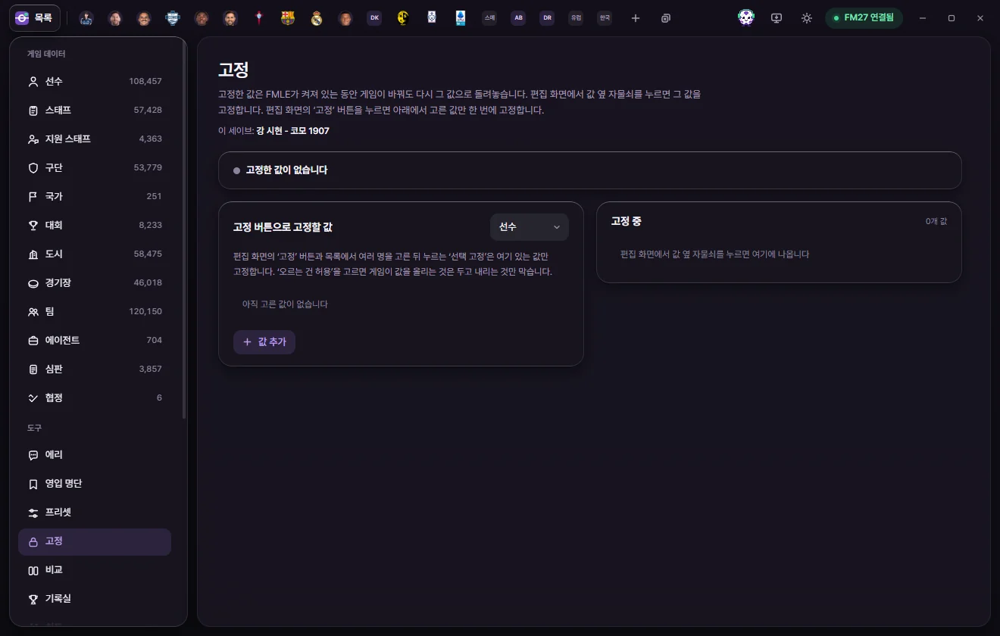

도구
고정
고정한 값은 FMLE가 켜져 있는 동안 게임이 바꿔도 다시 그 값으로 돌려놓습니다. 값 하나씩 자물쇠로, 또는 미리 고른 값 묶음을 '고정' 단추로 한 번에 고정합니다.


고정이란
고정한 값은 FMLE가 켜져 있는 동안 정한 간격(처음에는 1초)마다 게임 값을 확인합니다. 게임이 값을 바꿨으면 고정한 값으로 다시 씁니다.
- 게임 날짜와 상관없이 확인합니다. 게임을 멈춰 두어도 고정은 계속 돕니다.
- FMLE가 켜져 있을 때만 지킵니다. FMLE를 끄면 게임이 값을 바꿀 수 있습니다.
- 고정을 풀면 게임 값은 그때 값 그대로 남습니다.
- 고정은 세이브마다 따로 기억합니다(세이브마다 따로 기억하는 것). 화면 위쪽의 '이 세이브: …'가 지금 목록이 어느 세이브의 것인지 알려 줍니다.
값 하나 고정하기: 자물쇠
- 편집 탭에서 값 줄에 마우스를 올리면 값 옆에 자물쇠가 보입니다(툴팁 '이 값 고정').
- 자물쇠를 누르면 게임에서 지금 읽은 값으로 고정합니다. 자물쇠가 잠긴 모양으로 바뀝니다.
- 다시 누르면 고정을 풉니다.
고정한 값의 자물쇠는 마우스를 올리지 않아도 늘 강조 색으로 보입니다.
- 숫자 값에만 자물쇠가 있습니다. 고정할 수 없는 칸에는 자물쇠가 없습니다.
- 탭이 게임에서 값을 읽기 전에는 '게임에서 읽은 뒤에 고정할 수 있습니다'라고 알립니다.
- 바꾸고 아직 저장하지 않은 칸을 고정하면 게임 값으로 고정합니다. 그 뒤 '저장'을 누르면 고정 값도 새 값으로 바뀝니다.
- 고정한 값을 탭에서 고쳐 저장하거나, 프리셋·게임 에디터로 바꾸면 고정 값도 그 새 값으로 따라갑니다.
여러 값을 한 번에: '고정' 단추
편집 탭 위쪽 오른쪽의 고정 단추(자물쇠 모양)는 고정 화면의 '고정 버튼으로 고정할 값'에 고른 값만 지금 게임 값으로 한꺼번에 고정합니다. 다시 누르면 그 값들을 풉니다. 그 값이 모두 고정되어 있으면 단추가 켜진 색으로 보입니다.
고른 값이 없으면 '고정할 값을 먼저 골라 주세요' 알림과 '고정 설정 열기' 단추가 나옵니다.
여러 명 고정하기
- 목록에서 여러 명을 고르면 아래 막대에 '선택 고정'이 나옵니다.
- 오른쪽 클릭 메뉴의 '값 고정'(여러 명이면 'N명 값 고정')도 같습니다.
누르면 'N명 고정' 확인 창이 '고정 버튼으로 고정할 값 N개(…)를 지금 게임 값으로 고정합니다'라고 묻습니다. '고정'을 누르면 게임에서 값을 읽어 고정합니다. 이 두 단추는 고정할 값을 하나 이상 골라 두었을 때만 보입니다.
고정 화면
왼쪽 도구 목록의 고정을 누르거나, 창 위쪽의 '고정 N' 표시를 누르면 열립니다.
상태 줄과 단추
| 상태 | 뜻 |
|---|---|
| 고정한 값이 없습니다 | 고정 중인 값이 하나도 없습니다 |
| 켜져 있습니다. 게임 값을 지키는 중입니다 | 정상으로 돌고 있습니다 |
| 멈춰 있습니다. 게임 값을 지키지 않습니다 | '모두 멈추기'를 눌렀습니다. 목록은 남아 있습니다 |
| 게임을 기다리는 중입니다 (…) | 게임에 연결되지 않았거나 세이브를 불러오는 중입니다 |
상태 줄 오른쪽에는 'N번 다시 씀 · N초마다 확인'이 나옵니다. 게임이 바꾼 값을 지금까지 몇 번 되돌렸는지입니다.
- 모두 멈추기 / 다시 켜기: 목록은 두고 지키기만 멈추거나 다시 켭니다.
- 모두 풀기: 확인 창('고정한 값 N개를 모두 풉니다. 게임 값은 지금 값 그대로 남습니다.') 뒤에 목록을 모두 비웁니다.
고정 버튼으로 고정할 값
종류(선수, 스태프, 구단 등)를 오른쪽 위에서 고르고, 그 종류에서 '고정' 단추와 '선택 고정'이 고정할 값을 정합니다.
- '값 추가'를 누르고 칸을 고릅니다. 묶음 제목 옆 '묶음 전체'를 누르면 그 묶음의 칸을 모두 넣습니다.
- 줄마다 방식을 고릅니다.
- 값 유지: 게임이 값을 올려도 내려도 고정한 값으로 되돌립니다.
- 오르는 건 허용: 게임이 값을 올리는 것은 두고, 내리는 것만 막습니다. 값이 오르면 고정 값도 그 값으로 따라 올라갑니다.
- 휴지통 단추로 줄을 뺍니다.
선수는 처음에 부상 빈도와 더티 플레이가 들어 있습니다. 바꿔도 됩니다.
고정 중
고정한 값이 사람·구단별로 묶여 나옵니다.
- 이름 옆 열기: 그 탭을 엽니다.
- 모두 풀기: 그 사람의 고정을 모두 풉니다.
- 값 칩: '칸 이름 값'. '오르는 건 허용'이면 '↑허용'이 붙습니다. 칩의 × 단추로 그 값만 풉니다.
찾지 못한 대상
게임에서 그 사람이나 구단을 찾지 못하면 '고정 중' 목록에 '게임에서 찾지 못함'이 붙고, 상태 줄에 '찾지 못한 대상 N개'가 나옵니다. 창 위쪽 '고정 N' 표시도 경고 색이 됩니다.
다른 세이브를 불러왔거나, 게임에서 그 대상이 없어졌을 때 생길 수 있습니다. 찾지 못한 대상은 FMLE가 계속 찾아보며, 다시 찾으면 그대로 지킵니다. 필요 없으면 '모두 풀기'로 빼세요.
확인 간격
설정의 '고정 확인 간격'에서 0.5초, 1초, 2초, 5초 중 고릅니다. 짧을수록 게임이 값을 바꿔도 빨리 되돌립니다.
창 위쪽의 '고정 N' 표시
고정한 값이 있으면 창 위쪽에 자물쇠와 '고정 N'(멈췄으면 '고정 N · 멈춤')이 나옵니다. 마우스를 올리면 지금 상태가, 누르면 고정 화면이 나옵니다. 왼쪽 도구 목록의 '고정' 옆에도 개수가 나옵니다.
FMLE를 다시 켰을 때
설정의 'FMLE를 다시 켜면 지난번 상태 그대로'가 켜져 있으면(처음 값), FMLE를 끌 때 켜져 있던 고정이 다시 켜집니다. 게임에서 어떤 세이브를 열었는지 확인한 뒤 그 세이브의 고정만 켭니다. 이 설정을 끄면 멈춘 채로 시작합니다.